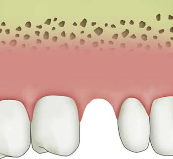
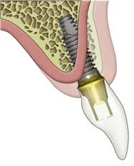

نسخه استخراجشده؛ ترجمه یا تأیید علمی انجام نشده است. وضعیت: captured
پیش از هر بحثی دربارهی ناحیهی زیبایی، این سه عدد را ببین. ضخامت میانهی استخوان آلوئولار باکال در ناحیهی قدامی ماگزیلا اندازهگیری شده است:
۱ میلیمتر زیر لبهی استخوان: ۰٫۸۳ میلیمتر، وسط ریشه: ۰٫۷۰ میلیمتر، ۱ میلیمتر از آپکس: ۰٫۸۸ میلیمتر.
یعنی در سراسر طول ریشه، استخوان باکال کمتر از یک میلیمتر است. این عدد، تقریباً هر چیز دیگری را در این یونیت توضیح میدهد: چرا تیغهی باکال هنگام کشیدن دندان اغلب از دست میرود، چرا انحراف فاسیال اینقدر خطرناک است، و چرا کاشت فوری در این ناحیه انتخاب مورد سختگیرانهای میطلبد.
عوامل ریسک بافت نرم. دو عامل که در معاینهی اول ثبت میشوند:
اسکالوپ لثه — یعنی اختلاف ارتفاع میان پاپیلا و حاشیهی آزاد لثه. هرچه این اسکالوپ بلندتر باشد، خطر از دست رفتن لثه پس از کشیدن دندان بیشتر است.
شکل دندان — شکل مثلثی تندترین اسکالوپ لثه را دارد و استخوان بیندندانی در آن دورترین فاصله را از نوک پاپیلا دارد. یعنی شکل مثلثی، هم بیشترین ارتفاع پاپیلا را میطلبد و هم شکنندهترین است.
و برای مقایسه، توزیع ارتفاع پاپیلا: پاپیلا معمولاً میان دو سانترال بلندترین است و هرچه به سمت دیستال میرود کوتاهتر میشود.

قانون ۵ میلیمتر. وقتی فاصلهی تماس بیندندانی تا استخوان بینسپتال ۵ میلیمتر یا کمتر باشد، پاپیلا صد درصد فضا را پر میکند. و از منظر ابعاد بیولوژیک: بُعد بیولوژیک بافت نرم حدود ۳ میلیمتر بالای استخوان در موقعیت میدفاسیال و ۳ تا ۵ میلیمتر بالای استخوان بیندندانی است.
نسبت پاپیلا به تاج. فاصلهی حاشیهی آزاد لثهی فاسیال تا نوک پاپیلای میانی معمولاً ۴ تا ۵ میلیمتر است — یعنی ارتفاع پاپیلا حدود ۴۰ تا ۵۰ درصد طول تاج نمایان.
وقتی پاپیلا کافی نیست. چند راهحل وجود دارد و ترتیبشان آموزنده است:
۱. راهحل پروتزی: پایین آوردن نقطهی تماس تاج با تغییر شکل دندانهای مجاور، که هر جا ممکن باشد روش انتخابی است — یعنی بهجای بالا بردن پاپیلا، تماس را به سمت آن پایین میآوری.
۲. راهحل جراحی: تکنیک اسپلیتفینگر در جراحی مرحلهی دوم، که با اباتمنت هیلینگ اندازهی پاپیلا را افزایش میدهد.
۳. هدایت با پروویژنال: پس از کامل شدن ترمیم استخوانی ایمپلنت، پروویژنال روی ایمپلنت میتواند بافت نرم را بهصورت پروتزی به موقعیت ایدهآل هدایت کند.
و طراحی برش: وقتی پاپیلاها در موقعیت قابل قبولی هستند، برشهای حافظ پاپیلا زده میشود تا رفلکشن بافت نرم به حداقل برسد. یعنی بهترین راه داشتن پاپیلا، دست نزدن به آن است.
